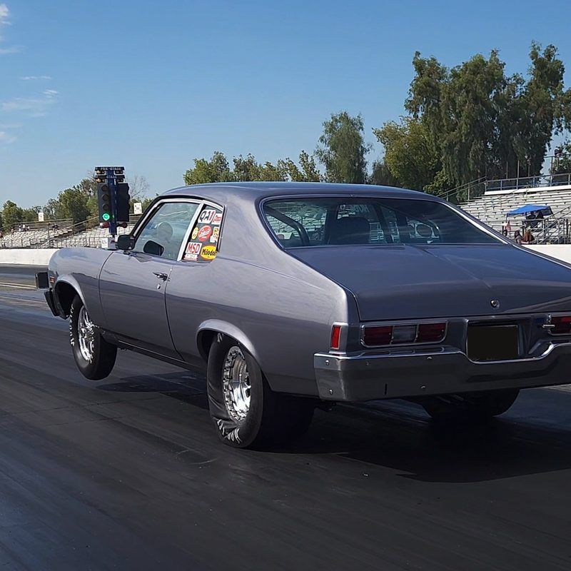
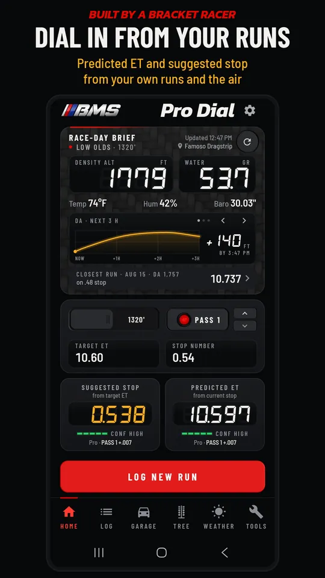
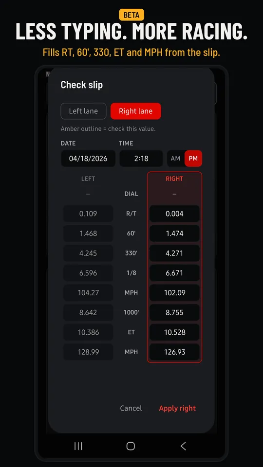
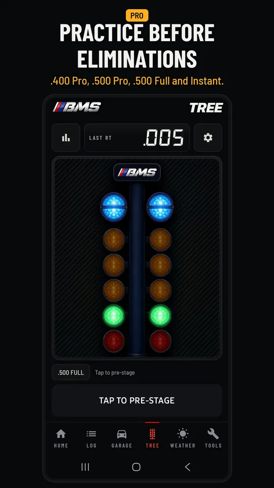
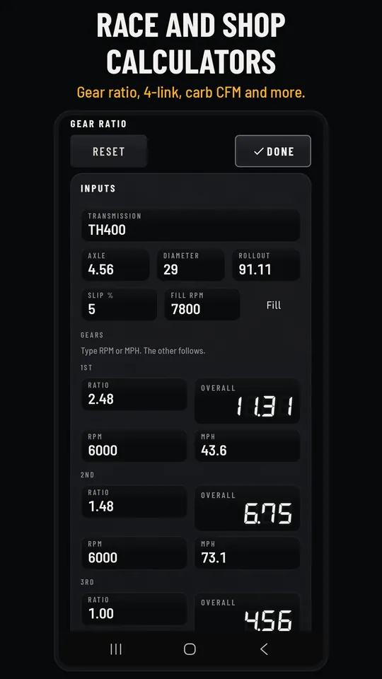

Built by a bracket racer
BMS Pro Dial: a drag racing logbook and dial-in app for Android
Log your passes, and Pro Dial predicts your next ET and suggests a dial or throttle stop from your own runs and the air you're racing in.
Lite is free. Pro has a 2-week free trial for first-time subscribers. Android only, on Google Play in the US and Canada.
What it is
BMS Pro Dial is a real logbook instead of a pile of slips. Every pass gets saved with the date, track, stop, weather, density altitude (DA) and water grains. Each car learns from its own runs, and every prediction comes with a Low, Medium or High confidence label. It's not magic. You still have to drive it.
- ET and dial-in prediction from your own logged runs and the weather
- Suggested stop for throttle stop or stop timer cars, or ET only if you don't run a stop
- Suggested ballast pounds for Jr. Dragsters
- Timeslip scanner (beta) that reads the slip on your phone
- Practice tree and race and shop calculators
- 1/8 mile and 1/4 mile
Who built it

I'm Dave Brownson Jr. with Brownson Motorsports. For the last 25-plus years I've raced a small block powered 1973 Oldsmobile Omega that my dad and I built together. We're a father-son team racing on weekends just like you, and Pro Dial started as the logbook I wanted for our own car.
A real logbook beats a pile of slips, so I figured other racers could use it too.
Who it's for
- Bracket racers running a throttle stop or stop timer
- Index and ET racers who run without a stop
- Families racing Jr. Dragsters, where the parents usually end up keeping the logbook anyway
- Street car and test and tune racers who want a real logbook
A look at the app




